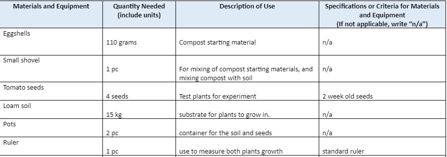
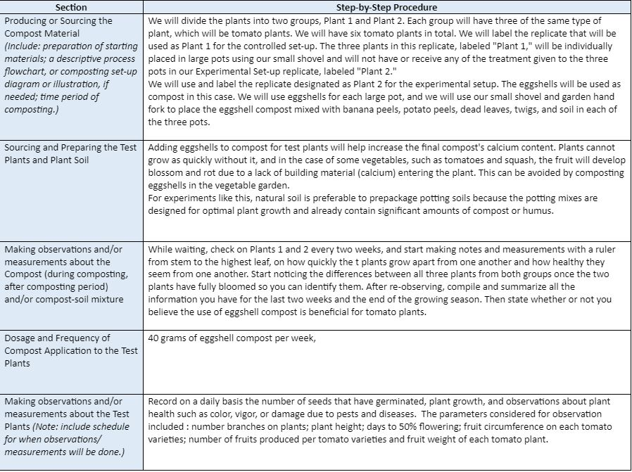

SAKADAB
SIP
The Effect of Eggshell Compost to The Solanum Lycopersicum
BACKGROUND AND SIGNIFICANCE OF THE STUDY:
The purpose of this study is to decide whether the presence of banana peel compost can affect the developing process of a tomato plant. We find it essential to undertake this research because this knowledge it will help many in our community, whether it'd be for food or to make money since all the factors in this study are accessible to everyone. In our community and environment, there is great value when it comes to composting in general, since composting is able to enrich our soils, retaining their moisture by allowing water to more readily move laterally from where it is applied, and protecting it from plant diseases such as chili wilt, pythium root rot and common pests such as parasitic nematode (worm) infections. And in some cases can actually eliminate the need for chemical fertilizers. How can SAKADAB make use of this project? Since our goal is to see if the presence of crushed eggshell compost can affect the growth of a tomato plant and if the compost can affect the plant in a positive way. SAKADAB can easily take this study to its advantage, with this knowledge from our project, SAKADAB will be able to plant and harvest fast and good quality fruits where they can benefit in different ways, such as being able to grow their own food or to even monetize by manufacturing it to be their own product, common products like tomato paste, tomato sauce, tomato ketchup. And will be another source of income to support their organization.
PROBLEM:
Will the presence of eggshell compost affect the height of the tomato plant?
HYPOTHESIS:
If we apply eggshell compost to a tomato plant, then it will grow faster and produce good-quality fruits.
REVIEW OF RELATED LITERATURE:
Our research on the Solanum Lycopersicum L(tomato plant). The nutrients that it needs are potassium, nitrogen, and phosphorus to grow. Potassium is needed to maintain the ionic balance and water status within the plant. It helps with the production and transport of sugars in the plant, enzyme activation, synthesis of proteins, pigment synthesis, and lycopene. Potassium helps the tomato plant in its growth stages by giving the plant a strong early growth, maximizing concentrations in leaf tissue prior to flowering, maintaining plant growth, maximizing high levels in the fruit, and minimizing disorders. Potassium helps the soil by maintaining turgor; reduces water loss and wilting, helps retard crop diseases, aids in photosynthesis and formation, increases root growth, and improves drought resistance. The tomato plant needs around 225 lb per acre of potassium. Nitrogen is a key component of enzymes, chlorophyll, and other cell constituents, all of which are essential for crop growth and development. It is one of the most important nutrients needed for high tomato yields. Nitrogen helps the tomato plant in its growth stages by promoting strong early growth, ensuring continued growth, maintaining plant growth, and maximizing flower numbers and reduced amounts to maintain fruit fill. The tomato plant needs around 100 lb of nitrogen per acre for maximum fruit yield and quality. Phosphorus is a component of nucleic acids(DNA and RNA) and is essential for energy transfer within the plant. Thus it has a direct effect on yield and quality. It helps the tomato plants in their growth stages by maximizing root development, ensuring continued growth, and fruit development, and boosting tomato nutritional quality. Phosphorus affects the soil of the plant by promoting root growth, and winter hardiness, stimulating tillering, and often hastening the plant's maturity. The tomato plant also needs 150 lb of phosphorus per acre.
A. METHODOLOGY
| Independent Variable | Presence of Eggshell Compost and Amount of compost needed |
|---|---|
| Dependent Variable | Height of tomato plant, Number of leaves |
| Controlled Variables | amount of soil, amount of water, amount of sunlight, number of pots, number of tomato seeds |
B. TREATMENTS/SET UP
| Treatment/Setup: | Control Setup: | Experimental Set-up: |
|---|---|---|
| What is the quantitative value of the independent variable? | 8-inch pot Loam soil 2 tomato seeds small shovel 1 cup of water | 8-inch pot Loam soil 2 tomato seeds small shovel 1 cup of water Eggshell Compost |
| No. of Trials or Replicates | 3 | 3 |
| Experimental Measurement or Observation | Description of Measurement or Observation | Significance of Observation |
|---|---|---|
| Height of tomato plant | Height of the tomato plant will be measured every 2 weeks | Dependent variable, a measurement related to plant growth rate | No. of leaves | Number of leaves of the plant will be counted every 1 week | One of the dependent variables; a measurement related to plant growth rate |
D. MATERIALS AND EQUIPMENT NEEDED/ E. PROCEDURES FOR TESTING AND GATHERING/OBTAINING DATA

